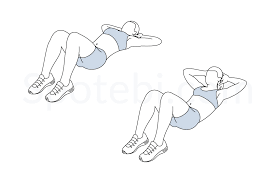
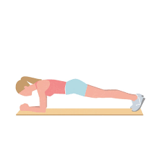
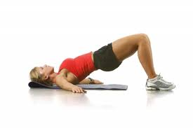

El Core como su nombre traducido lo indica, es el centro o nucleo del cuerpo, y es un conjunto de músculos anteriores, laterales y posteriores que dan estabilidad al tronco y el cuerpo en general, entre estos músculos se destacan algunos ya mencionados como lo son los gluteos o erectores de cadera, y otros muy conocidos como el transverso del abdomen, el recto del abdomen y los oblicuos.
Ya que hemos hablado en las páginas de Espalda y Pierna sobre los glúteos y los erectores de cadera, vamos a centrarnos en los obliquos y el abdomen.
Abdomen
El Recto del Abdomen participa de la flexión del tronco en su conjunto, y junto con el Transverso ayudan en la respiración y cumplen otras funciones varias.
Para trabajar estos 2 músculos, podemos realizar:
- Crunches/Abdominales
- Plancha
- Elevaciones de cadera
- Abdominales en polea
Cabe destacar que estos músculos tambien participaran en otros ejercicios donde se deba estabilizar el cuerpo.
  Oblicuos
Los Oblicuos se componen por el Oblicuo Menor (interno) y el Oblicuo Mayor (externo) como principañ función la rotación del torax, aunque al igual que los otros músculos del abdomen, ayudan en la respiración y flexión del tronco.
Para ejercitarlo eficientemente se realizan ejercicios como:
- Twist Rusos
- Abdominales Cruzados
- Plancha Lateral
- Leñador